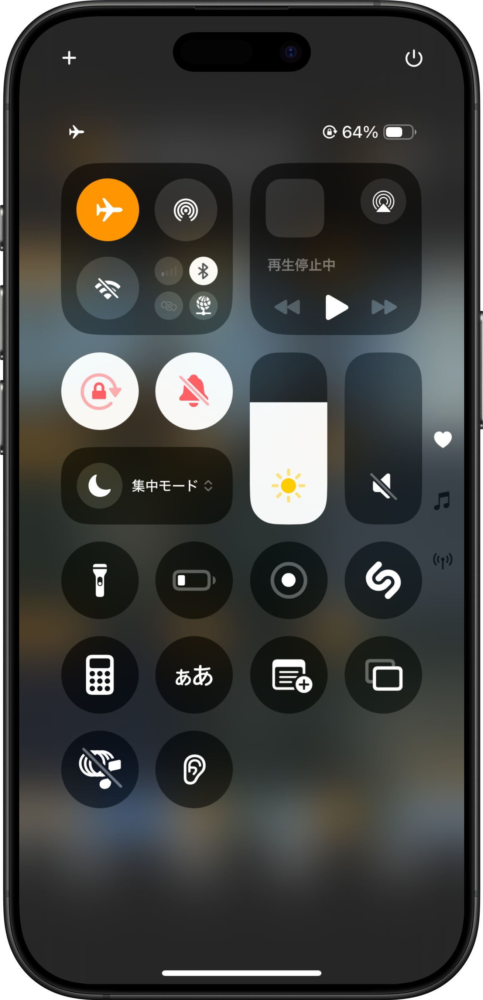

VIEW 眺める
ただ見るだけではない
地下や構造物の内部といった
街の知られざる姿を発見する。
Structure Archive
コンセプト
ただ見るだけではない
地下や構造物の内部といった
街の知られざる姿を発見する。
ただつくるだけではない
都市の構造を組み替えて
見えない景色を生み出していく
制作した景色や発見した構造は、そのまま公開して他のユーザーと共有できます。ひとりで蓄積するだけではなく、誰かの視点から生まれた都市の見え方に触れられるのも Structure Archive の魅力です。閲覧と制作が循環することで、街の理解がさらに広がっていきます。

見つけた構造を眺めるだけで終わらせず、線路や構造物を組み替えながら新しい景色を構想できます。都市の骨格に手を加え、まだ存在しない断面や流れを試しながら、見えない景色を自分の手で立ち上げていくためのエディターです。

アーカイブされた景色は、あとから何度でも巡り直せます。公開された都市をたどり、自分の編集と見比べながら、街の構造に対する理解を深めていくことができます。ひとつの発見が次の発見につながるように、Structure Archive は都市との関わりを途切れさせません。